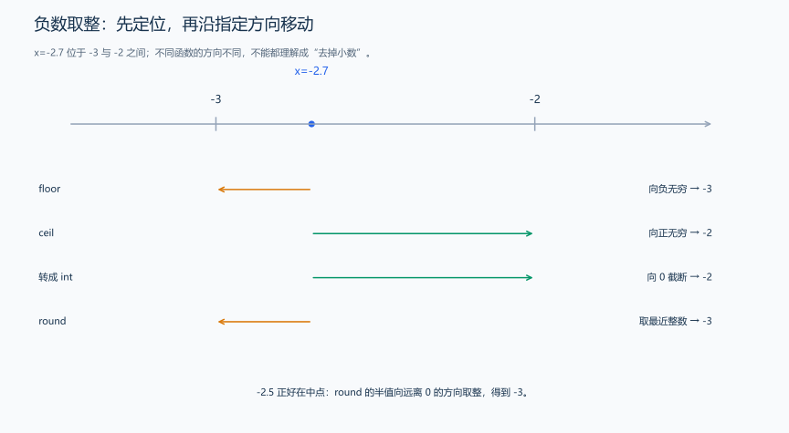

（十二） 常用数学函数与数值计算
计算距离需要平方根，计算需要多少辆车可能需要向上取整。先把这些工具看成已学过的函数：给定参数，得到返回值，再核对返回类型、取整方向和定义域。
| 头文件 | 函数 | 含义与结果 |
|---|---|---|
<cstdlib> |
abs(int) |
整数绝对值，例如 abs(-3) 得到 3 |
<cmath> |
sqrt(x) |
非负数 x 的平方根近似值 |
<cmath> |
fabs(x) |
浮点绝对值 |
<cmath> |
floor(x)、ceil(x) |
向负无穷、正无穷取整，返回值仍为浮点类型 |
<cmath> |
round(x) |
就近取整，恰好一半时向远离 0 的方向 |
<cmath> |
pow(x,y) |
浮点乘方，结果可能带有舍入误差 |
<cmath> |
isfinite(x) |
判断是否为有限值，排除无穷大与 NaN |
<cmath> |
acos(x) |
反余弦，实数参数在 [-1,1]，返回弧度；acos(-1.0) 得到 π 的浮点近似值 |
题目原文（自拟演示）： 程序无需输入。求 9.0 的平方根，分别对 -2.7 向下、向上取整，再求 2.0 的三次方，分四行输出。
#include <cmath>
#include <iostream>
using namespace std;
int main() {
cout << sqrt(9.0) << '\n'; // 3；浮点输出不一定自动带小数点。
cout << floor(-2.7) << '\n'; // -3，向下取整，向负无穷，不是截去小数部分。
cout << ceil(-2.7) << '\n'; // -2，向上取整，向正无穷。
cout << pow(2.0, 3.0) << '\n'; // 2.0 的三次方，这里输出 8。
}把 -2.7 转成 int 得到 -2，是向 0 截去小数部分；floor(-2.7) 得到 -3，是向负无穷方向取整。普通 int 的最小值为 -2147483648 时，它的正绝对值是 2147483648，比 INT_MAX 大 1；先转成 long long 再求绝对值，就能保存这个结果。后面的快速幂用整数乘法逐步计算整数次幂。
1. 整数坐标的距离计算
题目原文（自拟）： 输入两点的四个整数坐标 x1、y1、x2、y2，绝对值不超过 \(10^6\)，输出两点距离的 double 近似值，使用默认浮点格式。
推导： 横向差 dx、纵向差 dy 是直角三角形两边，距离平方为 dx²+dy²。先让差和乘法使用 double，再调用 sqrt；若先用 int 平方，即使最后赋给 double，也可能在中间步骤越界。
#include <cmath>
#include <iostream>
using namespace std;
int main() {
int x1, y1, x2, y2;
cin >> x1 >> y1 >> x2 >> y2;
double dx = static_cast<double>(x1) - x2; // 在后续平方前选择浮点计算。
double dy = static_cast<double>(y1) - y2;
cout << sqrt(dx * dx + dy * dy) << '\n'; // sqrt 接收非负值，返回平方根近似。
}输入 0 0 3 4，输出 5。表达式先得到 9+16=25，再开方；输出 5 不代表距离类型是 int，默认浮点格式可能省略小数点。题目要求小数位时，再使用下一节的格式设置。
2. 取整方向要沿数轴判断

对 -2.7，floor 向负无穷得到 -3，ceil 向正无穷得到 -2，转换成整数向 0 截断得到 -2；round 就近得到 -3。对于 -2.5，round 的一半规则是远离 0，得到 -3。负数更容易看出方向差别：向下是往数轴左侧走，向上是往右侧走，截断则朝 0 靠近。
3. 浮点误差与判断精度
double 在常见二进制浮点实现中用有限位表示数，0.1 等十进制小数通常不能精确保存。于是 0.1+0.2 与 0.3 的比较可能不相等；格式化显示都像 0.3，也不代表内部值完全相同。
题目原文（自拟演示）： 比较 a=0.1+0.2 与 b=0.3，输出它们的差是否在绝对容差 \(10^{-9}\) 内。
#include <cmath>
#include <iostream>
using namespace std;
int main() {
double a = 0.1 + 0.2, b = 0.3;
constexpr double epsilon = 1e-9; // 两值的绝对差不超过这个容差时，视为足够接近。
bool close = fabs(a - b) <= epsilon; // fabs 求差的绝对值。
cout << close << '\n'; // 差小于容差，输出 1。
}绝对容差比较两数相差多少，相对容差比较这个差占数值的比例。例如题目允许绝对误差 \(10^{-6}\)，就按这个精度判断；允许相对误差时，还要结合数值大小。求精确的整数幂时，后面会用整数乘法实现快速幂。
这些函数得到数值后，还要按题面要求输出，下一节先处理精度和格式。随后学习模板，解释同一段操作如何用于不同类型；进入 STL 时，尖括号中的类型就有明确含义了。